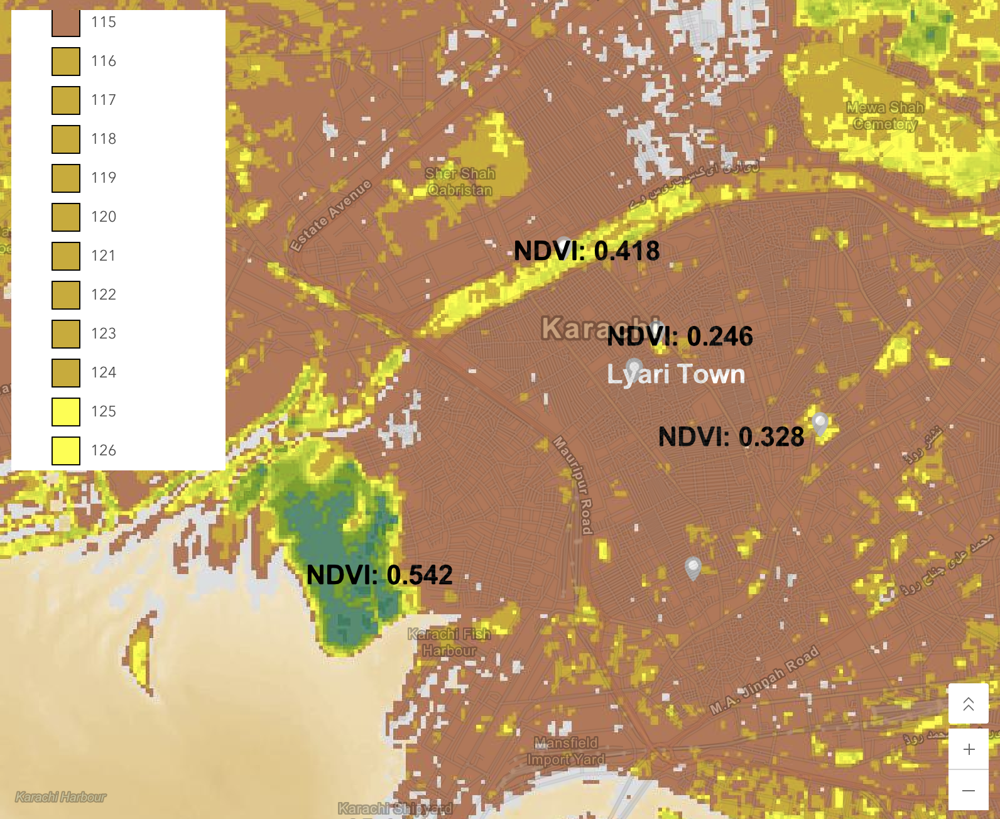

Week 05 · October 2026
The question
How do natural catchment boundaries, the proximity of water sources, and the adjacency of engineered water infrastructure to the natural catchment area influence water movement to Lyari Town, Karachi, and to what extent do they affect the connectivity of Lyari town to safe local water?
The data
The layers used are MERIT-Hydro (2021), on the higher precision setting, with kilometers squared as the unit. This is used under license CC BY-NC 4.0 or Open Database license 1.0. The second layer is from WRI Aqueduct 4.0, license CC BY 4.0, baseline period 1979-2019, and april 2023 data vintage.
The method
The watershed was delineated using MERIT-Hydro (2021), which has a spatial resolution of approximately 90 meters, with the application's higher-precision setting. The unit is HydroBASINS Level 6 sub-basin expressed as a dimensionless ratio of water withdrawals to available renewable water supply. The outlet coordinates of my point at N24.876, E66.991 snap to N24.880, E66.995, which is roughly 250 meters away. The ratio of the index's polygon to the site area is 754.16sqkm / 6 sqkm = 125.69.

What I found
The high index place is adjacent to my site as the site itself has extremely low numbers of green areas. This area is called Chinna Creek, a marshy mangrove forest. The approximate NDVI value here was 0.542. In Lyari town the green space is found in football pitches, cemetaries, and the Lyari river itself.
What this does not show
NDVI of about 0.44 at the Lyari River bank does not show healthy riparian habitat, because NDVI responds to any green leaf, so weeds or grass fed by wastewater in the channel can score as high as a native stand.
AI use: AI assistance was used to navigate sites in the tutorial and to summarize information.